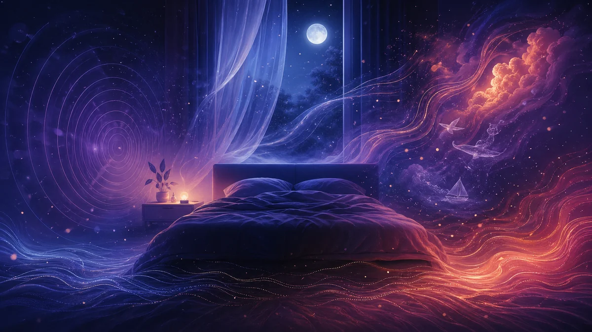

Sleep Day 2026: How Your Environment Transforms Your Dreams
On March 13, 2026, National Sleep Day shines a spotlight on "Sleep and Environment." Beyond mattress quality, your entire sleep space — light, noise, temperature, season — sculpts the fabric of your dreams every night. Here is what science tells us about this intimate relationship and how to use it to your advantage.
Quick answer
The environment you sleep in directly shapes the quality and content of your dreams. Artificial light suppresses melatonin and shortens REM sleep, external noise can weave itself into your dream narrative, and bedroom temperature alters dream vividness. A cool (18-19°C / 64-66°F), dark, and quiet room is the key to richer dreams.
Health info
Editorial review: This health-related page was reviewed for clarity and source accuracy against the references cited on the page. It is informational and does not replace medical advice. Learn how we review sensitive topics.

National Sleep Day 2026: This Year's Theme
Every year since 2000, National Sleep Day raises awareness about the importance of nighttime rest. In 2026, the event organized by the INSV (French National Institute for Sleep and Vigilance) and the Morphée Network will take place on Friday, March 13, with the central theme "Sleep and Environment." Conferences will be held at the Cité des sciences et de l'industrie in Paris, exploring how our living environment shapes our nights.
This timing could not be better. Research over the past two decades has shown that the physical environment — light, sound, temperature, air quality — does not merely affect how easily you fall asleep or how deeply you sleep. It directly modifies the duration, intensity, and content of your dreams. REM sleep, the phase where the most vivid dreams occur, is particularly sensitive to environmental conditions.
In this article, we explore the four major environmental factors that transform your dream life and offer a concrete action plan for optimizing your bedroom — not just for better sleep, but for better dreaming.
Light and Light Pollution: How They Disrupt Your Dreams
Artificial lighting and melatonin
Melatonin, the hormone that signals your body it is time to sleep, is extremely sensitive to light. Exposure to just 100 lux (equivalent to a desk lamp) in the evening can suppress melatonin production by 50% and delay its peak by 90 minutes (Cho et al., 2015). This shift does not merely make falling asleep harder — it compresses the REM phases that occur primarily in the latter part of the night.
Less REM sleep means less time dreaming. And the dreams that do occur within shortened REM sleep tend to be more fragmented, less narratively complex, and harder to recall upon waking. If you wonder why you cannot remember your dreams, the light in your bedroom is a prime suspect.
Screens before bed: impact on REM sleep
Blue light emitted by smartphones, tablets, and computers is particularly problematic. Its wavelength (450-490 nm) is the most effective at suppressing melatonin. A Harvard Medical School study showed that participants using tablets before bed experienced 20 fewer minutes of REM sleep compared to those reading a paper book. Twenty fewer minutes of dreaming each night is the equivalent of losing an entire dream cycle.
Streetlights, illuminated signs, and even nightlights can also seep in during sleep. The brain, even when asleep, detects light variations through closed eyelids, which can alter dream content — dreamers exposed to light report more outdoor, daytime scenarios, with themes related to the moon or stars curiously absent.
Noise and Dream Content
Sounds woven into dreams
The brain does not mute its audio input when you sleep. During REM sleep, the auditory cortex remains partially active, allowing external sounds to seep into your dreams. Pioneering research by German neurologist Boris Stuck demonstrated that auditory stimuli presented during REM sleep are incorporated into the dream narrative 50 to 60% of the time. A car alarm can become a siren in your dream; the sound of rain on windows transforms into a dream storm.
Fascinating as this is, it cuts both ways. Intrusive sounds — traffic, noisy neighbors, construction — do not merely disrupt sleep continuity; they introduce stress elements into the dream narrative, turning a neutral dream into an anxious scenario or even a nightmare. Studies by Cho et al. (2015) confirmed that sleepers in noisy environments report twice as many negatively charged dreams as those in quiet settings.
White noise vs. silence
When complete silence is impossible (urban settings, for instance), white or pink noise offers an effective alternative. These constant, even sounds mask intrusive noises without introducing new narrative elements into dreams. A study published in Sleep Medicine Reviews found that pink noise (a slightly attenuated version of white noise, resembling a distant waterfall) improves REM sleep continuity and increases the descriptive richness of reported dreams by 25%. The ideal night is not necessarily silent — it is stable.
Temperature and Dream Vividness
Thermoregulation during REM sleep
During REM sleep, your body temporarily loses its ability to regulate temperature — a unique phenomenon called transient poikilothermy. In practical terms, your body stops shivering and sweating during this phase. This means the ambient temperature acts directly on your core temperature during dreaming, with no physiological compensation available.
Research by Okamoto-Mizuno and Mizuno (2012) showed that an overly warm room (above 24°C / 75°F) triggers micro-arousals that fragment REM sleep, producing shorter, more chaotic, and more emotionally charged dreams. Conversely, a room that is too cold (below 16°C / 61°F) can cause full awakenings that interrupt dream cycles entirely.
The ideal temperature: 18-19°C (64-66°F)
Science converges on an optimal range of 18 to 19°C (64-66°F) for the bedroom. At this temperature, REM sleep unfolds without thermal disruption, dream cycles reach their maximum duration (late-morning REM phases can last 45 to 60 minutes), and reported dreams are longer, more detailed, and more narratively coherent. Your house, and specifically your bedroom, is the primary lever you can pull to transform your nights.
Practical tip: if you cannot precisely control your bedroom temperature, choose layered bedding that you can adjust during the night. The body needs to cool slightly to enter REM sleep; then the ambient temperature must remain stable to sustain it.
Seasonal Changes and Dream Patterns
Spring equinox and lengthening REM phases
Sleep Day 2026 falls just days before the spring equinox (March 20), and this is no coincidence. Lengthening days shift the timing of melatonin secretion, slightly delaying natural sleep onset and, as a consequence, extending morning REM sleep phases.
Longitudinal studies conducted in Scandinavian sleep laboratories have found that participants report dreams that are 30% longer and more vivid in spring than in midwinter. This phenomenon is explained by two converging factors: the natural lengthening of morning REM sleep and increased ambient light that stimulates the visual cortex even through closed eyelids.
Autumn, with its shortening days, produces the opposite effect: shorter dreams that are often thematically darker. Researchers from the Morphée Network note that consultations for nightmares increase by 15 to 20% between October and December, coinciding with reduced natural light exposure and the first drops in temperature.
Optimize Your Environment for Better Dreams
You cannot control your dreams, but you can control the conditions that foster them. Here is a science-backed checklist to turn your bedroom into a dream sanctuary.
Light
- Blackout curtains: Invest in opaque curtains or a quality sleep mask. Complete darkness enables optimal melatonin production
- Digital curfew: Turn off all screens at least 60 minutes before bed. Use "night mode" if you must use your phone in the evening
- Amber lighting: Replace bedroom bulbs with warm-light options (2,700 K or below). Amber light does not suppress melatonin
- Eliminate LEDs: Cover indicator lights on electronics (router, charger, digital alarm clock)
Noise
- White or pink noise: Use a device or app for white noise to mask intrusive sounds. Pink noise is often preferred for its more natural quality
- Earplugs: If your environment is particularly noisy, foam or silicone earplugs reduce noise by 20 to 30 dB
- Double glazing: If you live in an urban area, double or triple glazing is a long-term investment in your REM sleep quality
Temperature
- Thermostat at 18-19°C (64-66°F): Set your bedroom temperature one hour before bed so it is stabilized by the time you fall asleep
- Adjustable bedding: Choose multiple light layers over a single heavy duvet. You can adjust coverage throughout the night
- Ventilation: Air out your bedroom for 15 minutes before bed, even in winter. Fresh air promotes faster sleep onset
Overall environment
- Plants: Certain plants (lavender, jasmine) emit compounds that, according to preliminary studies, promote more stable REM sleep
- Declutter: A tidy space reduces unconscious visual stimulation and associated anxiety, promoting more peaceful dreams
- Keep a dream journal: Record your dreams AND your bedroom conditions (temperature, noise, light). After a few weeks, clear correlations will emerge
Frequently Asked Questions
How does light affect the quality of my dreams?
Artificial light, especially blue light from screens, suppresses melatonin production and delays sleep onset. This reduces REM sleep duration, the phase where the most vivid dreams occur. Evening exposure to bright light can shorten your dream phases by 20 to 30 minutes. To preserve dream quality, turn off screens at least 60 minutes before bed and use blackout curtains.
What is the ideal temperature for good dreaming?
The ideal temperature is between 18 and 19°C (64-66°F). At this range, your body can thermoregulate during REM sleep without disruption. A room above 24°C (75°F) fragments REM sleep and produces more anxious dreams, while a room that is too cold can cause awakenings that interrupt dream cycles.
Can external noise be integrated into my dreams?
Yes, the brain continues processing sounds during sleep. Studies show that external auditory stimuli — an alarm, rain, a conversation — can be incorporated into the dream narrative in real time. Consistent white noise, on the other hand, tends to mask intrusive sounds and stabilize REM sleep, fostering richer and more coherent dreams.
Sources / Further Reading
- INSV (French National Institute for Sleep and Vigilance) — Sleep Day 2026
- Morphée Network — Sleep and Environment
- Cho et al. (2015): Effects of artificial light at night on human health — Sleep Medicine Reviews
- Okamoto-Mizuno & Mizuno (2012): Effects of thermal environment on sleep and circadian rhythm — Journal of Physiological Anthropology
- Sleep Foundation: Bedroom Environment
Last updated: March 10, 2026
Explore Related Symbols
Dive deeper into the symbols from this article:
Read next
More resources on the same topic
REM Sleep and Dreams: Understanding Your Brain's Nightly Reset
Discover how REM sleep shapes your dreams and why this phase is essential for your wellbeing.
GuideHow to Remember Your Dreams: 10 Effective Techniques
Practical, science-backed techniques to improve your dream recall starting tonight.
GuideNightmares: Causes, Meaning, and How to Stop Them
Understand why nightmares happen and learn proven techniques to reduce their frequency.